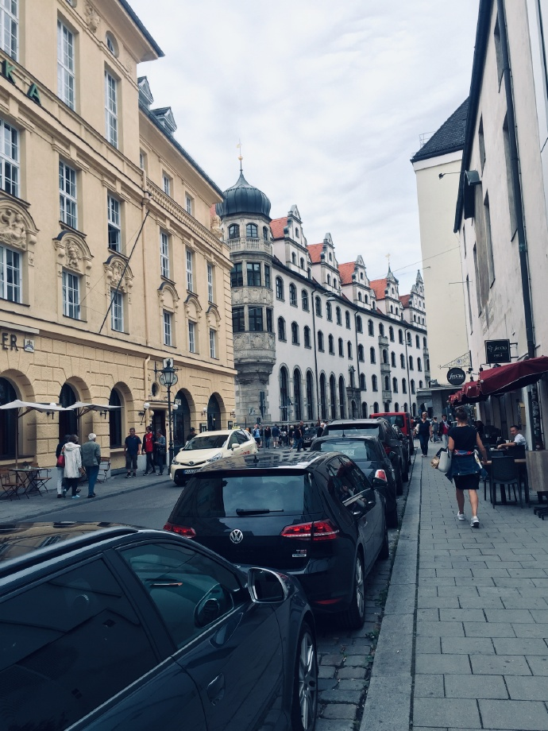

ミュンヘンに行こう
デュッセルドルフ編に続く、ドイツのミュンヘンでのお話をお届けいたします！
ミュンヘン中央駅
賑やかな中央駅到着したら、早速予約したホテルにチェックインです！
列車の乗り方
前回忘れたが、ここで補足します。ドイツの駅には改札やセキュリティ検査が存在しません。窓口や自動販売機でチケットを購入し、打刻機器のところでセルフ打刻したら、乗車OKです。（打刻必要のないチケットもあります、とりあえず打刻機器に差し込んで、入れないものは打刻いらないですｗ）
途中、乗務員がチケットの確認をされるので、タダ乗りは高額の罰金が取られます。
また、購入したチケットと違う列車に載った場合、クレジットカードで乗務員からチケットを購入できますが、MasterCardのみになります。VISAやAEが使えないので、そこだけご注意ください。
さてと、遊びモードに入りますか！
マリエン広場
観光客いっぱい
ホテル隣は、ミュンヘン有名のマリエン広場なので、まずはそちらに伺いました。
このあたりは、以前から街の中心部になってて、カルチャーを感じられるものが多いですね。
道を歩くと、記念品販売店や、飲食店もズラッと並んで、ヨーロッパの風情が感じられます。

ビアホールでお食事
そろそろお腹ペコペコなので、飯にするか！
訪ねできたのは、あのヒトラーが演説したこともあるビアホール、”ホフブロイハウス ミュンヘン”です。
結構いい感じのメニューがありますが、残念ながらドイツ語はさっぱりわかりません。
でも、よく見ると、下に英語も添えてますね、これはこれは、助かりました。
問答無用、肉とビールだ！
レストランの注文の仕方
ここで、もうちょっと補足ですが、基本的に、営業中のお店に入って、勝手空いてる席を座ってるだけでもOK。
係員は店のエリアごとに配置されており、別エリアの係員を呼んても、相手にされないこともあります。
とりあえず、係員が来るまで、座って、待ってください。
大体英語は大丈夫です。都会ですので、ドイツ語オンリーは、基本見たことがないですね。
レストランだけではなく、別のお店でも、係員と視線が合わせたら、とにかく”Hello”を言ってください。
あまりにも沈黙すると、係員が傷付けられる。
繁華街で買い物
マリエン広場の隣も繁華街がありまして、そちらでお店を回りました。
デュッセルドルフ編にも話しましたが、ドイツの高緯度のため、夏頃の昼間がめちゃくちゃ長い。これは、21時の時の写真です。
ノイシュヴァンシュタイン城
翌日、我々は、今回の旅で、結構大事にしたスポット、ノイシュヴァンシュタイン城に行きました。
ミュンヘンから列車で約2時間かかります。
ドイツの列車には、遅延が付き物ですので、新幹線感覚で乗っちゃたらアカンで！
列車→路線バス→馬車の順で一通り乗り換えたら、目的地に到着。
内部は、撮影禁止のため、割愛させてください。お城っていいなぁ〜
記念品として、これを買いました！いい感じにうちに飾っています。
コカ・コーラlight
最後ですが、ドイツには、コーラゼロがありません！
代わりに、コーラライトというものがありますが、同じく糖質ゼロみたい〜味は日本のコーラゼロよりいいかと思います！
うちに帰る
初めて、オーストリア航空を乗りました。片道12時間の旅……辛い……
今度、また旅を出たら、ここにアップさせて頂ければと思います。今回はこれでお開きとしょう〜